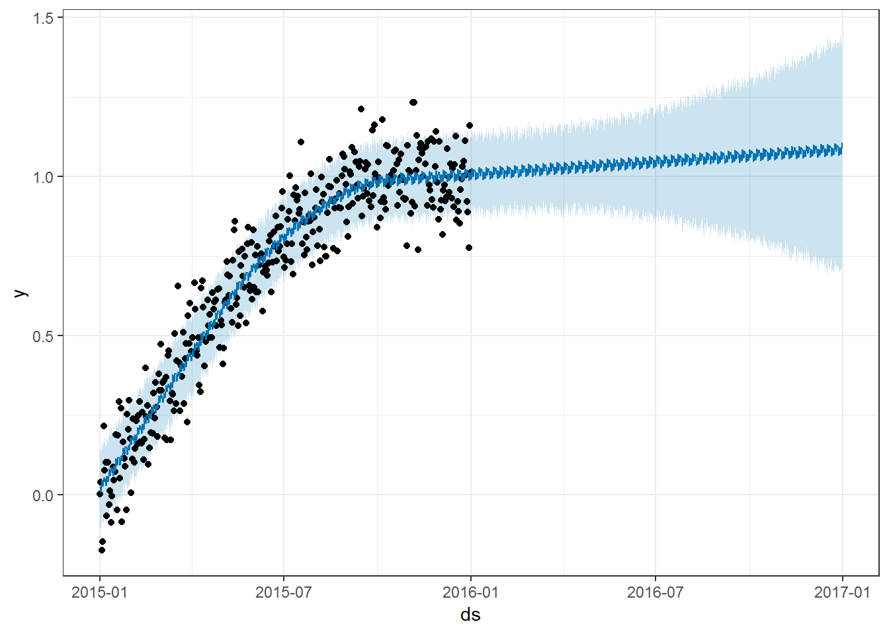
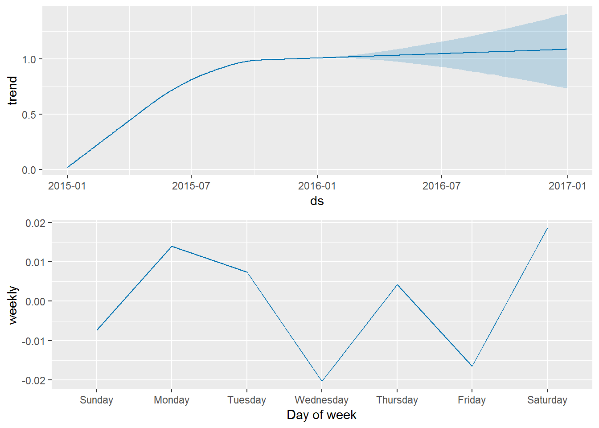
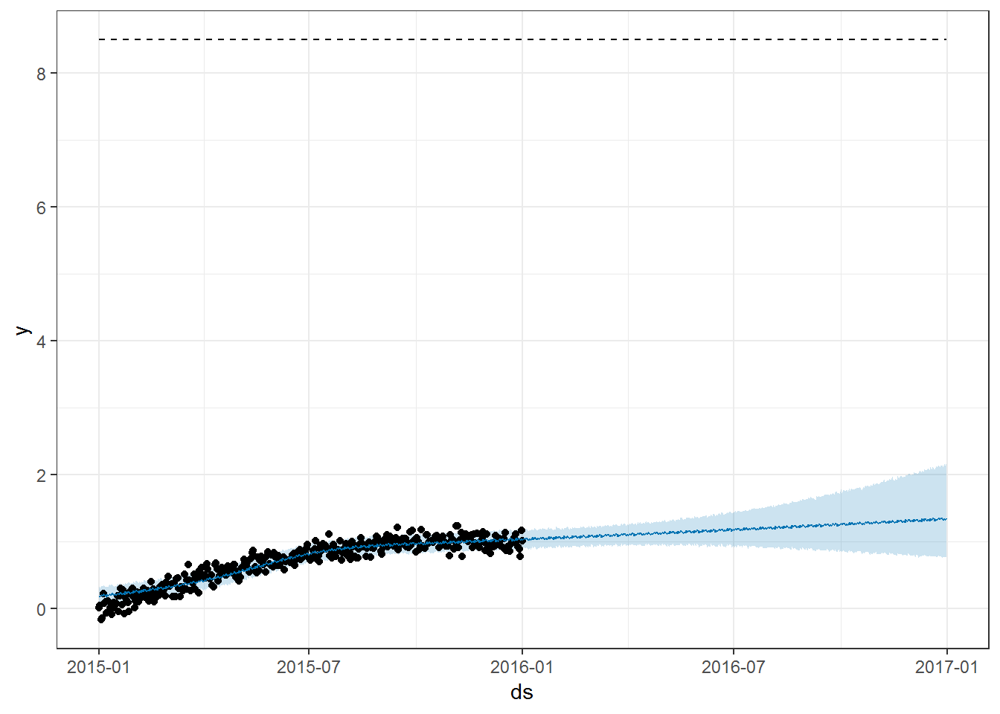
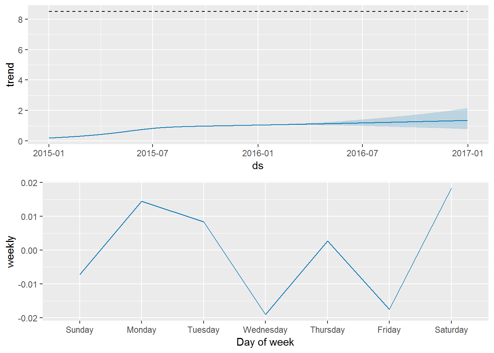

4. Dự báo chuỗi thời gian với prophet¶
4.1. Giới thiệu¶
prophet là một hệ mã nguồn mở do Facebook xây dựng để dự báo chuỗi
thời gian
4.2. Ví dụ cơ bản¶
library(dplyr)
library(prophet)
library(ggplot2)
#Step 1: Tạo data frame
history <- data.frame(ds = seq(as.Date('2015-01-01'), as.Date('2016-01-01'), by = 'd'),
y = sin(1:366/200) + rnorm(366)/10)
history %>% head
## ds y
## 1 2015-01-01 0.001751611
## 2 2015-01-02 0.039118108
## 3 2015-01-03 -0.175620578
## 4 2015-01-04 -0.147252191
## 5 2015-01-05 0.215419004
## 6 2015-01-06 0.076111100
#Step 2: Tạo object prophet
m <- prophet(history)
#Step 3: Tạo future data frame
future <- make_future_dataframe(m, periods = 365)
future %>% str
## 'data.frame': 731 obs. of 1 variable:
## $ ds: POSIXct, format: "2015-01-01" "2015-01-02" ...
#Step 4: Forecast
forecast <- predict(m, future)
forecast %>% tail
## ds trend additive_terms additive_terms_lower
## 726 2016-12-26 1.085859 0.013933242 0.013933242
## 727 2016-12-27 1.086075 0.007393078 0.007393078
## 728 2016-12-28 1.086291 -0.020361419 -0.020361419
## 729 2016-12-29 1.086507 0.004246924 0.004246924
## 730 2016-12-30 1.086724 -0.016432808 -0.016432808
## 731 2016-12-31 1.086940 0.018582508 0.018582508
## additive_terms_upper weekly weekly_lower weekly_upper
## 726 0.013933242 0.013933242 0.013933242 0.013933242
## 727 0.007393078 0.007393078 0.007393078 0.007393078
## 728 -0.020361419 -0.020361419 -0.020361419 -0.020361419
## 729 0.004246924 0.004246924 0.004246924 0.004246924
## 730 -0.016432808 -0.016432808 -0.016432808 -0.016432808
## 731 0.018582508 0.018582508 0.018582508 0.018582508
## multiplicative_terms multiplicative_terms_lower
## 726 0 0
## 727 0 0
## 728 0 0
## 729 0 0
## 730 0 0
## 731 0 0
## multiplicative_terms_upper yhat_lower yhat_upper trend_lower
## 726 0 0.7239666 1.416866 0.7391549
## 727 0 0.7152534 1.424590 0.7384016
## 728 0 0.6991269 1.407389 0.7372156
## 729 0 0.7104738 1.444149 0.7352387
## 730 0 0.7022480 1.411089 0.7335726
## 731 0 0.7269319 1.433971 0.7326064
## trend_upper yhat
## 726 1.399509 1.099792
## 727 1.401138 1.093468
## 728 1.402460 1.065930
## 729 1.403831 1.090754
## 730 1.404439 1.070291
## 731 1.405071 1.105522
#Plot predictive
plot(m, forecast) + theme_bw()

#Plot component
prophet_plot_components(m, forecast)

4.3. Điều chỉnh mô hình tăng trưởng¶
history$cap <- 8.5
m <- prophet(history, growth = "logistic")
#Step 3: Tạo future data frame
future <- make_future_dataframe(m, periods = 365)
future %>% str
## 'data.frame': 731 obs. of 1 variable:
## $ ds: POSIXct, format: "2015-01-01" "2015-01-02" ...
future$cap <- 8.5
#Step 4: Forecast
forecast <- predict(m, future)
forecast %>% tail
## ds trend cap additive_terms additive_terms_lower
## 726 2016-12-26 1.334013 8.5 0.014487984 0.014487984
## 727 2016-12-27 1.334935 8.5 0.008327203 0.008327203
## 728 2016-12-28 1.335857 8.5 -0.019088815 -0.019088815
## 729 2016-12-29 1.336780 8.5 0.002734058 0.002734058
## 730 2016-12-30 1.337703 8.5 -0.017579392 -0.017579392
## 731 2016-12-31 1.338627 8.5 0.018345029 0.018345029
## additive_terms_upper weekly weekly_lower weekly_upper
## 726 0.014487984 0.014487984 0.014487984 0.014487984
## 727 0.008327203 0.008327203 0.008327203 0.008327203
## 728 -0.019088815 -0.019088815 -0.019088815 -0.019088815
## 729 0.002734058 0.002734058 0.002734058 0.002734058
## 730 -0.017579392 -0.017579392 -0.017579392 -0.017579392
## 731 0.018345029 0.018345029 0.018345029 0.018345029
## multiplicative_terms multiplicative_terms_lower
## 726 0 0
## 727 0 0
## 728 0 0
## 729 0 0
## 730 0 0
## 731 0 0
## multiplicative_terms_upper yhat_lower yhat_upper trend_lower
## 726 0 0.7904373 2.134310 0.7728866
## 727 0 0.7540797 2.143009 0.7709996
## 728 0 0.7666392 2.103659 0.7690338
## 729 0 0.7675113 2.160660 0.7672413
## 730 0 0.7629828 2.128935 0.7658399
## 731 0 0.7651526 2.177067 0.7644265
## trend_upper yhat
## 726 2.122192 1.348501
## 727 2.127121 1.343262
## 728 2.132056 1.316768
## 729 2.137000 1.339514
## 730 2.141951 1.320124
## 731 2.146396 1.356972
#Plot predictive
plot(m, forecast) + theme_bw()

#Plot component
prophet_plot_components(m, forecast)
